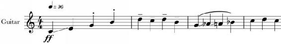

Figure 7. Note the marks above, below, and within the notes. These indicate how a note is to be played.
In addition to pitch and to time, music works two important ways. There is not only the way a note functions harmonically (or melodically) and the way that it functions rhythmically, there is also the way that note is expressed, the way that sound is made. This occurs most basically along two axes: the volume of that tone and the attack and release of that tone’s sound wave.
The first of these – volume – is understood in terms of what musicians call “dynamics”, and the second – attack and release – is understood in terms of the sound’s “articulation” or “phrasing”.
Dynamics refers to the volume of a sound, and articulation refers to the physical process by which it is made, which results in various kinds of attack and release curves in the sound’s wave.